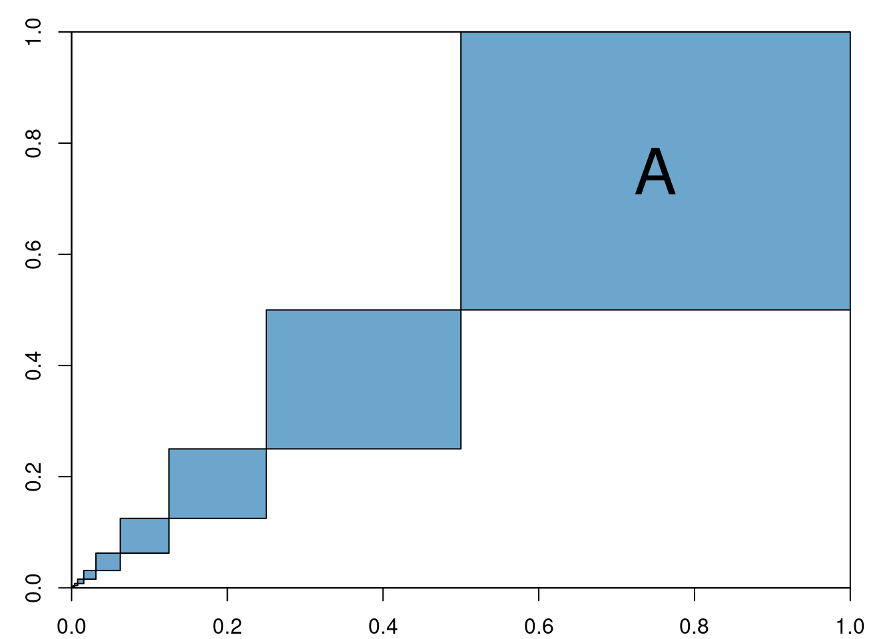
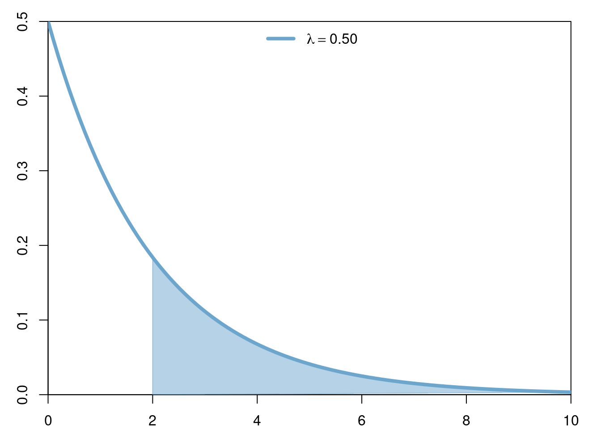
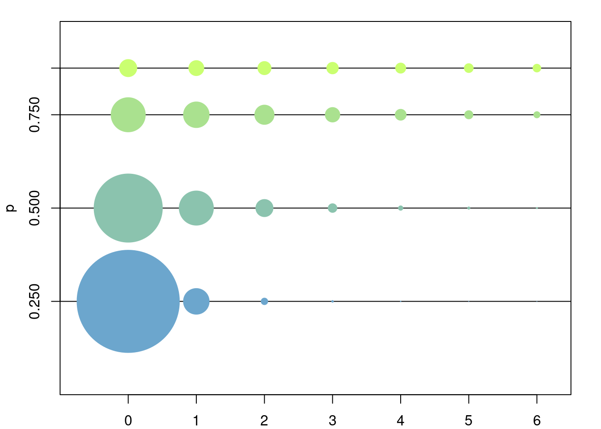
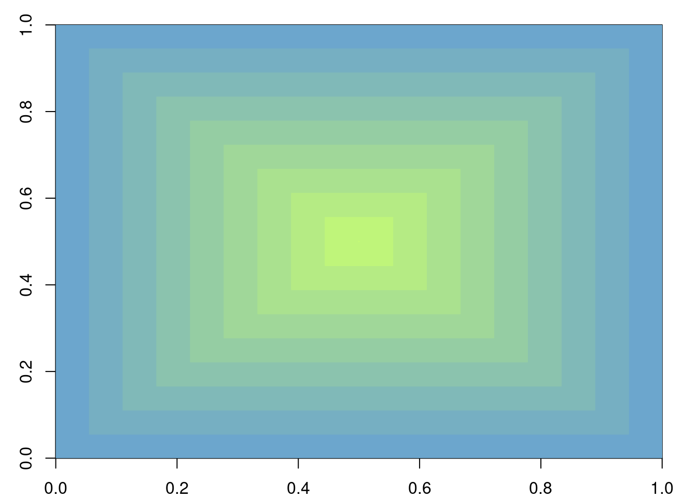

2 Probability Spaces and Random Variables
2.1 Probability Spaces
Let \(\Omega\) be a set and let \(\mathcal{P}(\Omega)\) be its power set, i.e. the family \(\left\{A\colon A\subset \Omega\right\}\).
Definition 2.1 A family of sets \(\mathscr{F}\subset \mathcal{P}\left(\Omega\right)\) is called a \(\sigma\)-algebra if it has the following properties:
\(\Omega\in\mathscr{F}\) and \(\emptyset\in\mathscr{F}\).
If \(A\in\mathscr{F}\) then \(A^c\in\mathscr{F}\).
If \((A_n)_{n\in\mathbb{N}}\subset\mathscr{F}\) is a countable collection of subsets in \(\mathscr{F}\), then \[\bigcup_{n=1}^\infty A_n\in\mathscr{F}.\] I.e. \(\mathscr{F}\) is closed under countable unions.
The pair \((\Omega,\mathscr{F})\) is called a measurable space.
Definition 2.2 Let \((\Omega,\mathscr{F})\) be a measurable space. A function \[\mathbb{P}\colon \mathscr{F}\to \mathbb{R}^+\] is called a probability measure if it satisfies the following properties:
\(\mathbb{P}(\Omega) = 1\) and \(\mathbb{P}(\emptyset)=0\).
\(\mathbb{P}(A)\geq 0\) for all \(A\in\mathscr{F}\).
- If \((A_n)_n\subset \mathscr{F}\) is a countable collection of pairwise disjoint sets, i.e. \[ A_i \bigcap A_j = \emptyset \quad \forall i\neq j, \] then \[ \mathbb{P}\left(\bigcup_n A_n\right) = \sum_n \mathbb{P}(A_n). \] The triplet \((\Omega,\mathscr{F},\mathbb{P})\) is called a probability space.
2.1.1 First Examples
- \(\Omega=[0,1]\),
- \(\mathscr{F}=\mathscr{B}([0,1])\) (safely ignore),
- \(\mathbb{P}(A)=length(A)\)
- E.g. If \(A=[a,b]\) then \(\mathbb{P}(A)=b-a\)
- \(\Omega=[0,1]^n\),
- \(\mathscr{F}=\mathscr{B}([0,1]^n)\) (safely ignore),
- \(\mathbb{P}(A)=volume(A)\),
- E.g. If \(n=2\) and \(A=[a,b]\times[c,d]\) then \(\mathbb{P}(A)=(b-a)(d-c)\).
- E.g.  In this case \(\mathbb{P}\left(A\right)=\sum_{n=1}^\infty \left(\frac{1}{2^2}\right)^n = 1/3\).
2.1.2 Important Examples
2.1.2.1 Continuous probability measures on \(\mathbb{R}\) (or \(\mathbb{R}^+\), etc)
Definition 2.3 (Continuous Probability Measure) Let \(f\colon \mathbb{R}\to \mathbb{R}^+\) be such that \(\int_{-\infty}^\infty f(x)\hspace{3pt}dx = 1\) (such an \(f\) is called a density function). Set
- \(\Omega=\mathbb{R}\) (resp. \(\mathbb{R}+\)),
- \(\mathscr{F}=\mathscr{B}(\mathbb{R})\) (resp. \(\mathscr{B}(\mathbb{R}^+)\))(safely ignore),
- \(\mathbb{P}(A)=\int_A f(x) \hspace{3pt}dx\)
- E.g. If \(A=[a,b]\) then \(\mathbb{P}(A)=\int_a^b f(x)\hspace{3pt}dx\).

Thus we may define a continuous probability measure \(\mathbb{P}\) on \(\mathbb{R}^+\) which satisfies, for example \[\mathbb{P}([a,\infty])=\int_a^\infty \lambda e^{-\lambda x}\hspace{3pt}dx=e^{-\lambda a}.\]

In this case \(\mathbb{P}[2,\infty]=\int_2^\infty 0.5e^{-0.5x}\hspace{3pt}dx = e^{-1}\).
2.1.2.2 Discrete probability measures on \(\mathbb{R}\) (or \(\mathbb{N}\), etc)
Definition 2.4 (Discrete Probability Measure) Let \((a_n)_n\subset\mathbb{R}\) be a countable collection of points in \(\mathbb{R}\) (resp. \(\mathbb{N}\), etc), and let \((p_n)_n\subset [0,1]\) be such that \[\sum_n p_n = 1.\] Set
- \(\Omega=\mathbb{R}\),
- \(\mathscr{F}=\mathscr{B}(\mathbb{R})\) (safely ignore),
- \[\mathbb{P}(A)=\sum_{n\colon a_n\in A}p_n \]
- E.g. If \(a_n=n\) for \(1\leq n \leq N\) and \(p_n=1/N\), then \(\mathbb{P}(\{1,2\}) = \frac{1}{N} + \frac{1}{N}=\frac{2}{N}\)
Example 2.2 Consider the geometric measure on \(\mathbb{N}\): let \(a_0=0, a_1=1, a_2=2, \dots\) and fix any \(p\in[0,1];\) define \(p_n=p^n(1-p)\) for \(n\in\{0,1,\dots\}\) and note that they satisfy \[ \begin{aligned} \sum_{n=0}^\infty p^n(1-p) &= (1-p)\sum_{n=0}^\infty p^n \\ &= \frac{1-p}{1-p} \\ &= 1. \end{aligned} \]

Thus we may define a probability measure \(\mathbb{P}\) on \(\mathbb{N}\) (or on \(\mathbb{R}\)). For any \(k\in \mathbb{N}\) this probability measure evaluated on the set \([0,k]\) gives \[ \begin{aligned} \mathbb{P}([0,k]) &= (1-p)\sum_{n=0}^k p^n \\ &= (1-p)\frac{1-p^n}{1-p}\\ &=1-p^n. \end{aligned} \]
2.2 Properties of Probability Measures
Theorem 2.1 Let \((B_n)_n\subset\mathscr{F}\) be a partition of \(\Omega\), i.e.
- \(\bigcup_n B_n = \Omega\), and
- \(B_n \bigcap B_m = \emptyset \quad \forall n\neq m\),

Theorem 2.2 Let \((\Omega,\mathscr{F}, \mathbb{P})\) be a probability space. The following equalities hold.
If \((A_n)_{n\in\mathbb{N}}\subset \mathscr{F}\) and \[ A_{n}\subset A_{n+1} \quad\forall n\in\mathbb{N}, \] then \[ \mathbb{P}\left(\bigcup_{n} A_n\right) = \lim_{n\to\infty} \mathbb{P}\left(A_n\right). \]
- If \((A_n)_{n\in\mathbb{N}}\subset \mathscr{F}\) and \[ A_{n+1}\subset A_{n} \quad\forall n\in\mathbb{N}, \] then \[ \mathbb{P}\left(\bigcap_{n} A_n\right) = \lim_{n\to\infty} \mathbb{P}\left(A_n\right). \]
